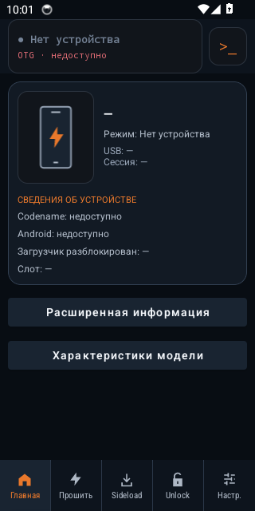
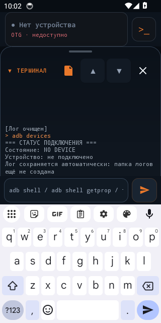
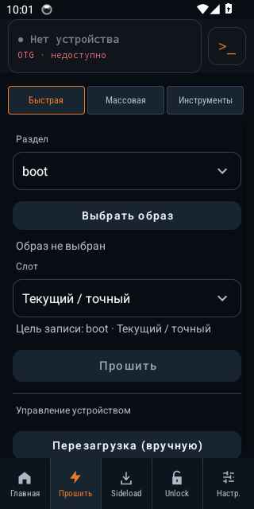
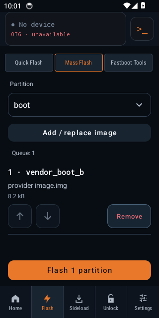
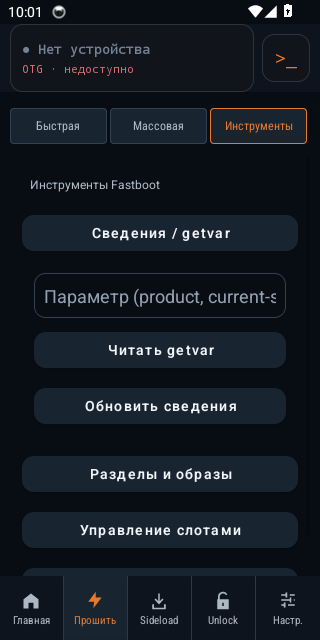
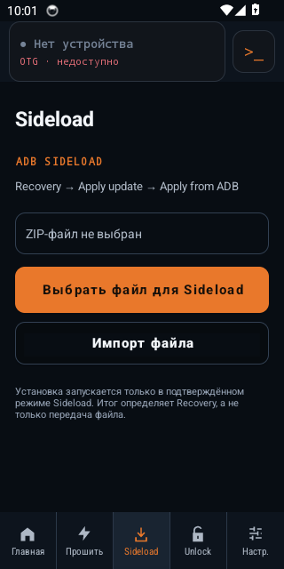

NekoFlash 2.0
Hardware beta testing · REV45
Run ADB and Fastboot from one Android phone to service a second phone over USB OTG. The host needs Android 8.0+ and USB Host support. A data cable is enough for supported devices.
We are collecting HOST → TARGET reports for the REV45 development build. The debug app installs alongside the original NekoFlash. Physical OTG, reconnect and partition-write results are still pending for this build.
ADB, Fastboot and recovery workflows in one Android app.
Protocol traffic is implemented inside NekoFlash and sent through Android USB Host. It does not bundle desktop adb or fastboot executables.
ADB over USB OTG
Device discovery and authentication, shell, push/pull, APK install, reboot services and diagnostics from the host Android device.
Fastboot flashing
Inspect variables and partitions, flash or boot images, erase/format supported partitions, switch slots and run supported OEM commands.
Recovery & ADB Sideload
Send a compatible update ZIP from Android when the target is in Recovery → Apply update → Apply from ADB mode.
Recovery-first Quick Flash
Flash recovery, boot, init_boot, vendor_boot, dtbo, vbmeta or another confirmed partition without a desktop computer.
Xiaomi Mi Unlock workflow
Optional Xiaomi account/unlock flow using official Xiaomi HTTPS endpoints and Fastboot over USB.
Operation Center & Console
Live progress stays visible across every workflow tab, including current step, safety state and explicit safe-cancellation feedback, with full step-by-step details in the Home Operation Center. The terminal/log dock remains explicit and never auto-expands over active work.
No desktop bridge in the middle.
Prepare the host
Install NekoFlash on an Android 8.0+ phone or tablet with USB Host / OTG support.
Connect the target
Use a data-capable USB OTG or USB-C cable and put the target in ADB, Recovery/Sideload or Fastboot mode.
Choose the operation
Verify the detected device, partition, slot and file, then run the selected ADB, Fastboot, Sideload or unlock workflow.
Useful answers for common Android flashing searches.
These guides explain the workflow boundaries and safety checks rather than encouraging blind flashing.
Fastboot from Android without a PC →
Connect another Android device over OTG, verify Fastboot mode and understand safe vs. mutating operations.
Flash recovery / TWRP from Android →
How Quick Flash handles recovery and boot-chain images, and why the correct target partition matters.
ADB Sideload from an Android phone →
Send an update ZIP from the host phone while the target is in Recovery / ADB Sideload mode.
Common questions
Can I use Fastboot from an Android phone without a PC?
Yes. NekoFlash implements Fastboot protocol traffic over Android USB Host, so a compatible Android phone or tablet can act as the host. The target still needs to be in Fastboot mode and the cable must carry data.
Does NekoFlash require root?
No root is required on the host Android device for the documented USB Host workflows.
Can NekoFlash flash TWRP or another recovery image?
NekoFlash can flash a compatible recovery image to a confirmed target partition through Fastboot. Device layouts differ: some devices have a recovery partition while others use boot-chain partitions such as boot, init_boot or vendor_boot. Use only images and partition instructions intended for the exact device.
Does USB-C to USB-C work?
It can, but Android may negotiate the wrong data or power role. The NekoFlash phone must be the USB host and the target must appear as the connected USB device before you start a write operation.
Does ADB Sideload work like normal ADB?
No. Recovery / ADB Sideload is a separate target mode. Put the target recovery into “Apply update → Apply from ADB”, then select the update ZIP in NekoFlash.
Inside the app
Android 14 emulator (API 34), REV45. Home shows a disconnected host. The Mass Flash queue contains a test image. CI #409






Field guide
Start with the interface and keyboard. Then connect a second phone, authorize ADB on the target and try adb devices and adb shell getprop ro.product.model. Record both models, Android versions, build ID and the observed result. Share the report ZIP privately with the test team.
Flashing, erasing, formatting or unlocking can wipe the target or leave it unable to boot. Test writes only in an agreed lab session with a spare target, a backup and a verified recovery path.